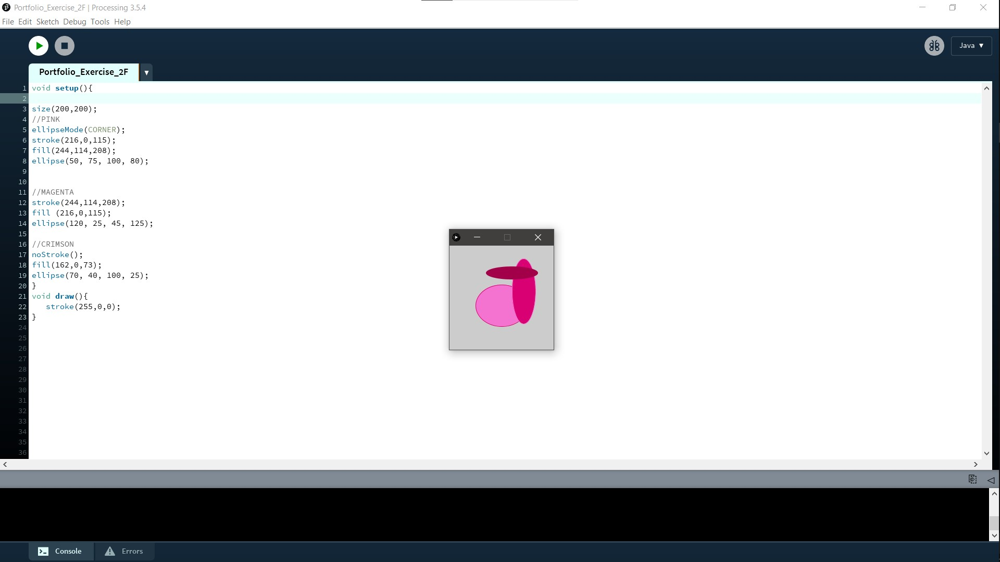
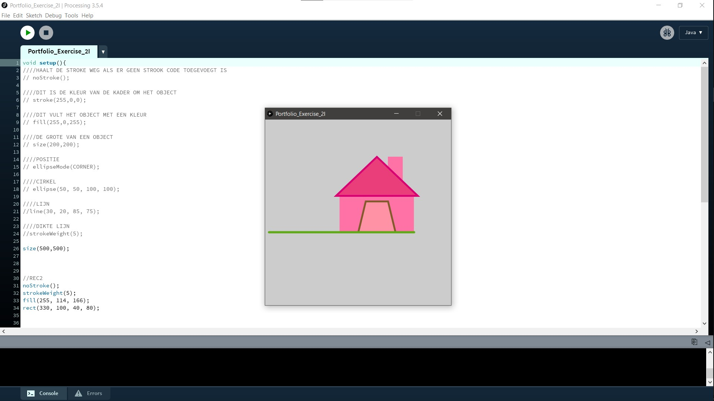
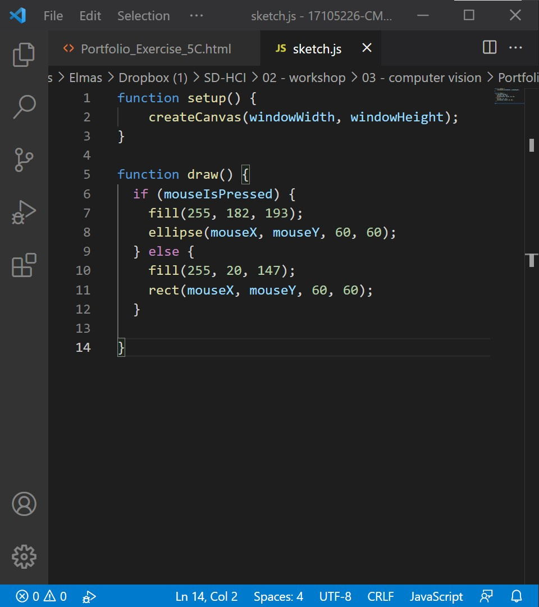
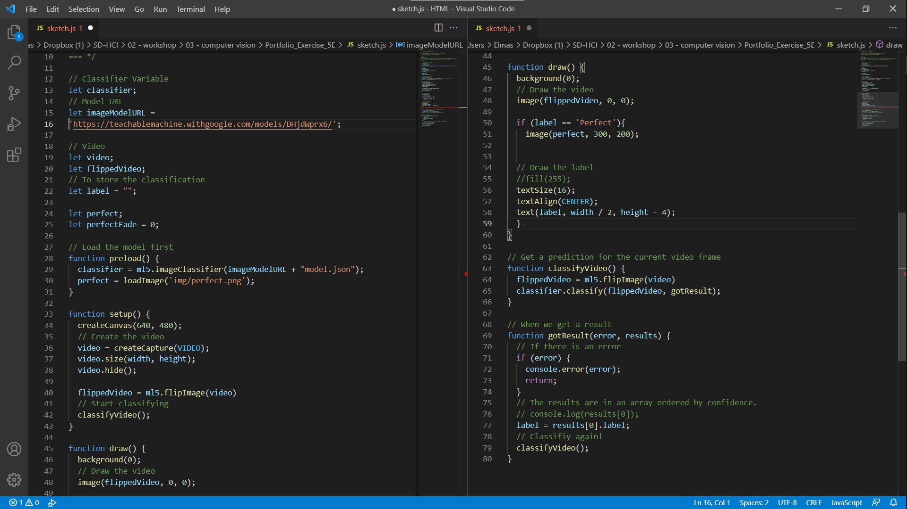

Sommige mensen die een grote operatie ondergaan, willen weten wat er tijdens zo'n operatie zal gebeuren en wat de resultaten op hun lichaam zullen zijn. Volgens de procedure vertelt de dokter de patiënt wat er tijdens de operatie wordt gedaan, maar de resultaten fysiek worden pas na de operatie door de patiënt gezien.
VR-technologie zou hiervoor een oplossing kunnen zijn. De dokter kan de patiënt met een VR-bril laten zien hoe de operatie zal verlopen en vervolgens kan hij met deze technologie de resultaten laten zien. Door vooraf te zien wat er precies gebeurt tijdens een operatie, zal de patiënt met een gerust hart de operatie ondergaan en dankzij VR-technologie kan de patiënt goed inschatten wat de resultaten zullen zijn.

Opdracht 2I ging over het gebruik van lijnen en vormen in een Processing. Tijdens de oefeningen mocht ik spelen met de posities en formaat van driehoeken, rechthoeken, cirkels etc.
De uiteindelijke opdracht was om van de verschillende vormen iets leuks te maken. Ik besloot een huis te maken.

Voor opdracht 2O moest ik minimaal twee verschillende vormen gebruiken met een interactie erin.
Ik dacht aan een Newton pendel cradle die ik vroeger thuis had en besloot een cirkel en een lijn met elkaar te verbinden. De cirkel en de lijn bewegen met de muis mee en de cirkel blijft groeien totdat het beeld helemaal geel wordt.
Opdracht 3B was een vrij eenvoudige opdracht om te doen, maar op de een of andere manier kreeg ik het niet werkend. Ik liep vast bij opdracht 3A waardoor ik opdracht 3B niet kon maken.

De opdracht was om een LED-lamp of buzzer of LED-matrix aan het werk te krijgen door bijvoorbeeld op een knop te drukken die op het scherm stond. Dit moest worden gemaakt in Arduino en Processing.
Om dit deel van deze website niet leeg te laten, heb ik online gezocht wat ik kon doen en vond ik een alternatieve code die een soort gelijke actie uitvoert 3B. Zie de video hieronder.
Bij de opdracht 5B kreeg ik een link met een paar codes waar ik mee kon spelen. Zo kwam ik er een beetje achter hoe P5.js werkt.
De opdracht voor 5C was om de kleuren van de vorm op de beeldscherm aan te passen. Ik besloot er eerst een donkerroze vierkant van te maken. Als je op je muis blijft klikken dan wordt het vorm een licht roze cirkel.
Zelf vond ik opdracht 5E de grappigste opdracht van deze workshop. De opdracht was om mijn eigen variatie te maken van één van de links dat gegeven is in opdracht 5D.
Ik heb niet precies dezelfde codes gebruikt die in de links stonden, maar ik het heeft wel een vergelijkbare verwerking. In de onderstaande link detecteert de camera of je een mens bent of niet.
https://editor.p5js.org/kylemcdonald/sketches/H1clUO9nm
In mijn variant detecteerd de camera een duim. Als je een duim omhoog laat zien, komt Garfield in beeld. Staat er geen duim op de beeld, dan komt Garfield niet in beeld.
